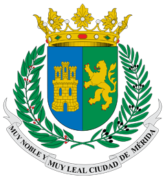

| |
 |
Mérida es la capital y ciudad más poblada del estado de Yucatán,
cabecera del municipio homónimo y la duodécima urbe con más habitantes de México.
Se encuentra ubicada al noroeste del estado en la región sureste del país, zona de la que es el
principal centro social, cultural, econémico y educativo. En 2020, la ciudad contaba con una
población de 921 771 habitantes y es el centro neurólgico de la denominada Zona Metropolitana
de Mérida en la que se encuentran conurbados cinco municipios de Yucatán y que alberga a una
población de 1 316 088 habitantes, siendo la undécima área metropolitana más
habitada del
país. Su rica herencia cultural es producto de la mezcla de las culturas maya, española
y africana durante la época colonial influenciada posteriormente por las culturas francesa
y libanesa con algunas aportaciones de la neerlandesa, coreana e italiana. Es una de las
ciudades con mejor calidad de vida del país y una de las más seguras de América.
|